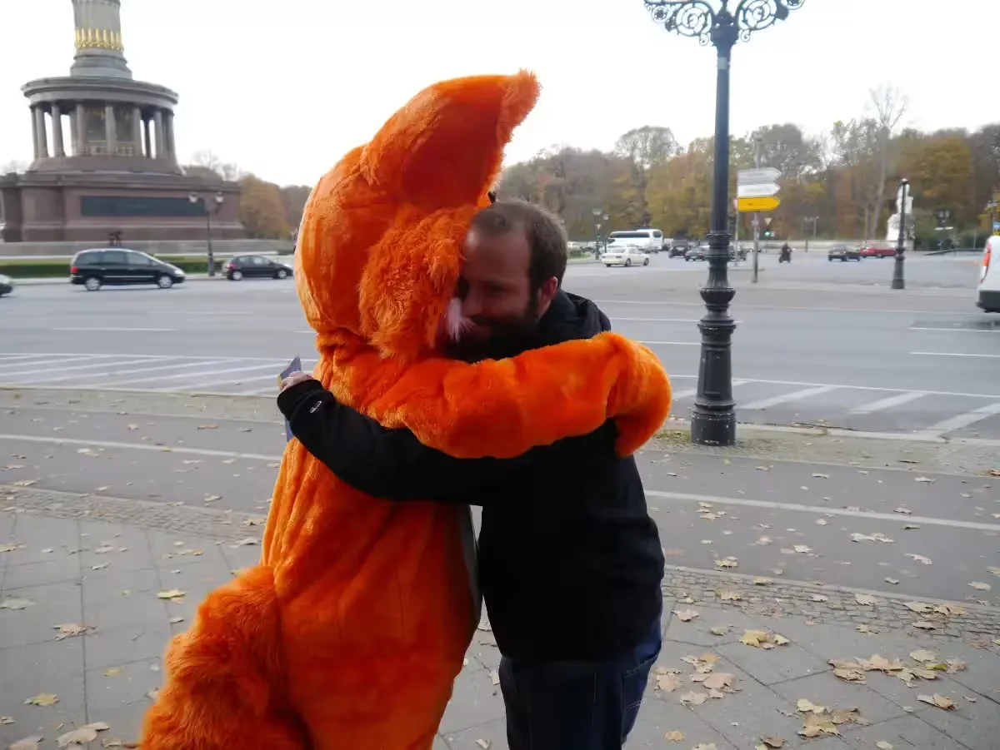
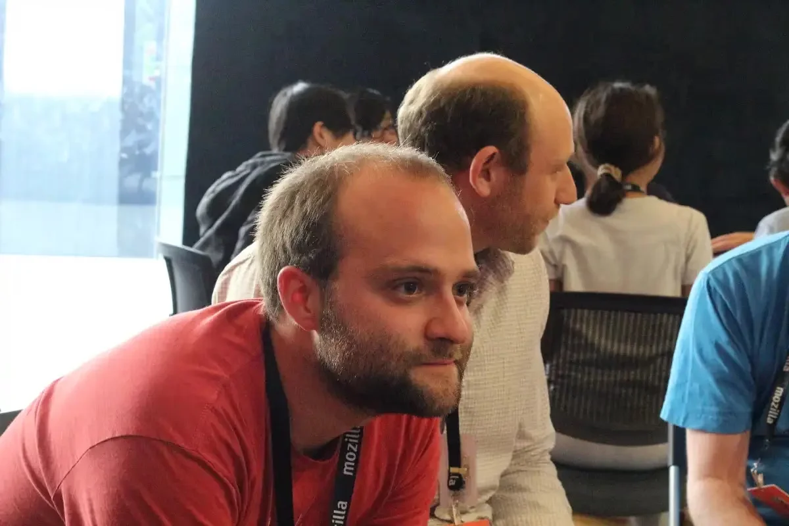
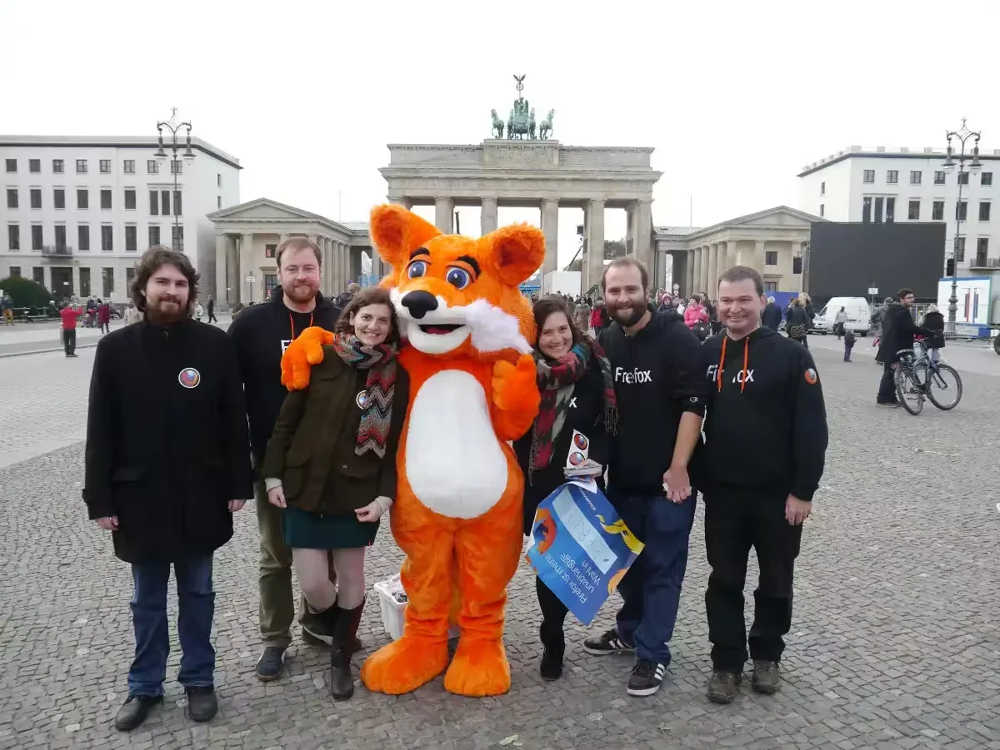
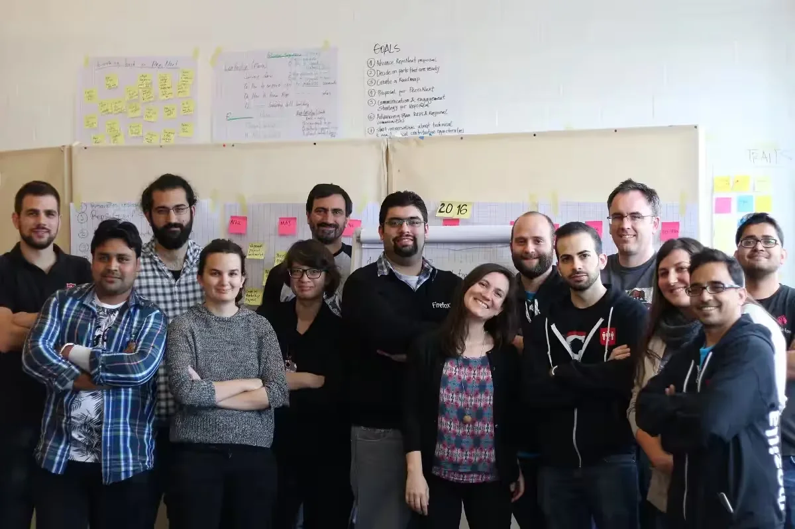

01 — 2008 - now
Firefox
- Using Firefox Nightly on a daily basis to test new features and look out for regressions
- Filed more than 130 bugs
- Submitted more than 250 patches for several different Firefox components
Lead Software Engineer
Berlin, Germany
Open Source
13,361
Tracked contributions
18
Years at Mozilla
250+
Firefox patches
130+
Bugs filed
01
Profiles
I’ve always been interested in the Open Web since I started creating my first websites. Mozilla’s mission is to “ensure the Internet is a global public resource, open and accessible to all”. This resonates with me very well because a lot of my knowledge comes from research on the internet. As I have contributed to Mozilla for a long time, it deserves its own section on this page.
I started to use Firefox around version 1 and never have switched since then. In the beginning I was using the release channel. After my math teacher in high school introduced us to Mozilla and what he is working on for Firefox (he wrote the initial code for Session Restore) I was hooked and started to use the nightly build and report bugs. Soon after that I wrote my first patch to improve the sorting the bookmarks backup menu. Since then I have written patches, started to bring Swiss Mozillians together, went as far as Germany and Austria to help build the German speaking community and I was also involved in the Mozilla Reps (Representative) program.
These days I am not as active as I was before, though I still try to contribute where I can. These days that is mostly by using and testing Firefox as well as advocating for an open internet.
02

01 — 2008 - now

02 — 2018 - 2024

03 — 2010 - 2024

04 — 2012 - 2023
03
| Date | Type | Description |
|---|---|---|
| 2026-10-21 | Approved a Pull Request | build(deps): bump zod from 4.6.5 to 4.6.7 in the production-dependencies group |
| 2026-10-21 | Approved a Pull Request | build(deps-dev): bump the development-dependencies group with 4 updates |
| 2026-10-20 | Approved a Pull Request | build(deps-dev): bump ava from 8.0.1 to 8.0.2 in the development-dependencies group |
| 2026-10-15 | Approved a Pull Request | build(deps-dev): bump handlebars from 4.7.9 to 4.7.10 |
| 2026-10-15 | Approved a Pull Request | build(deps): bump jsdom from 30.1.1 to 30.1.2 in the production-dependencies group across 1 directory |